Content by Terry Brown, terrynbrown@gmail.com, more software etc. on GitHub. @tbnorth.
Interactive mapping tool which lets the user define scenarios for wetland restoration projects.
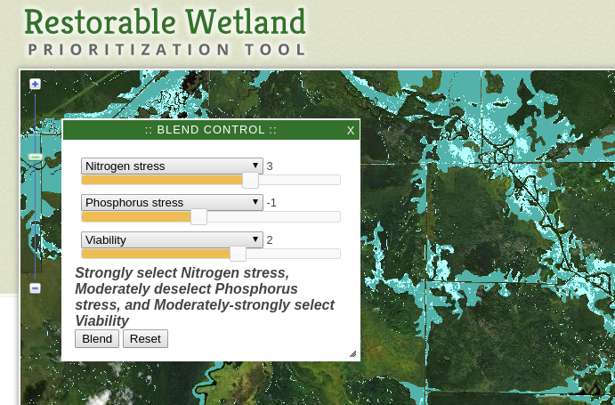Site generation, issue harvesting via API from both sites, coding - i.e. everything except the graphics.
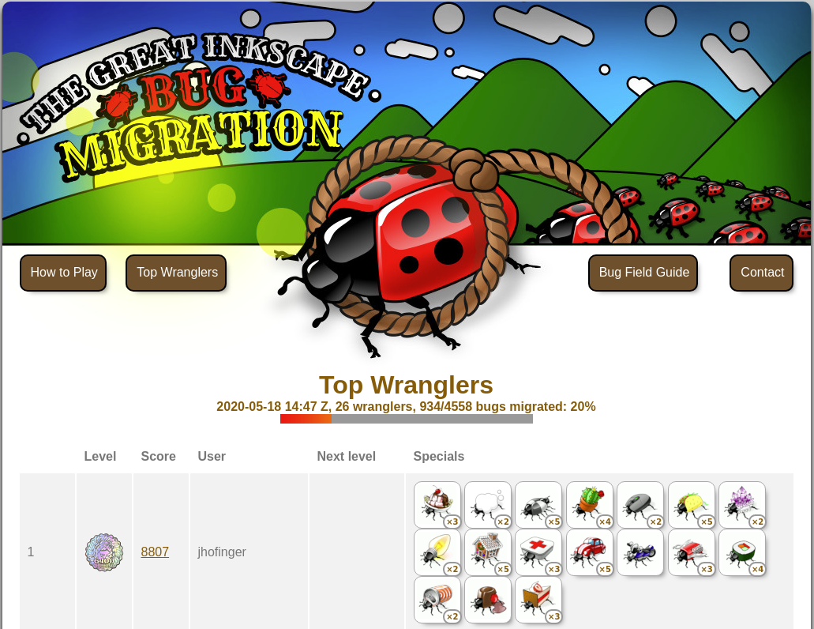Tool to map and analyze IT infrastructure. Names replaced with types below for explanation.
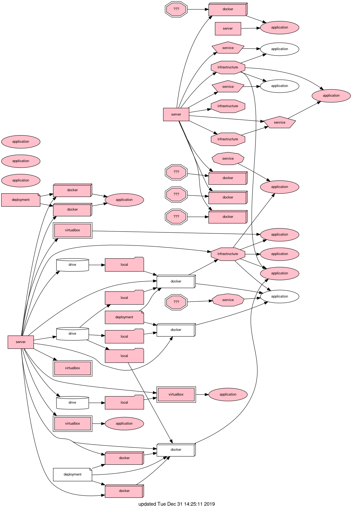Uses Abstract Syntax Tree (AST) analyses to find the best place to split a long function. E.g. line 761 in the example needs only a single variable to be passed.
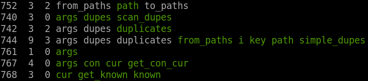Describes various options for managing research data. Won "best coffee shop poster" category :-)
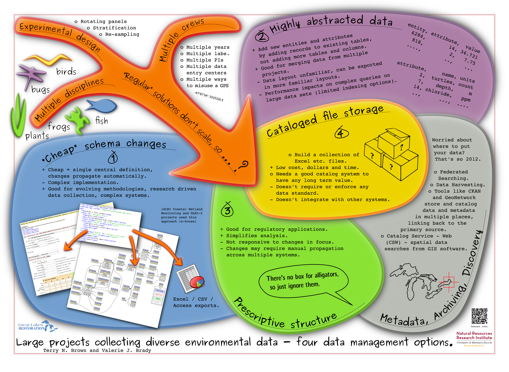Git is useful for data management and research reproducibility too.
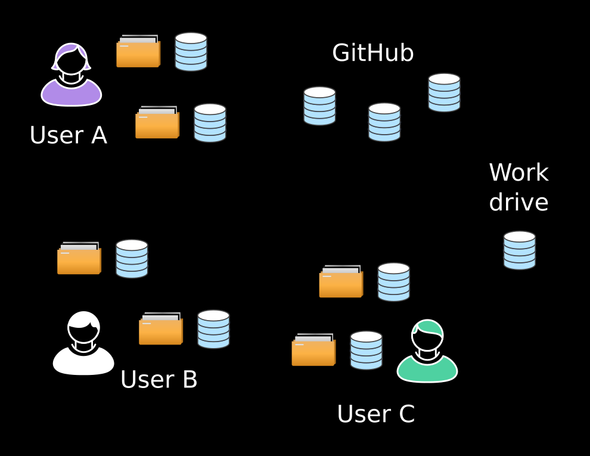Simulating the origin of nearshore water using agent based modeling and distributed computing.
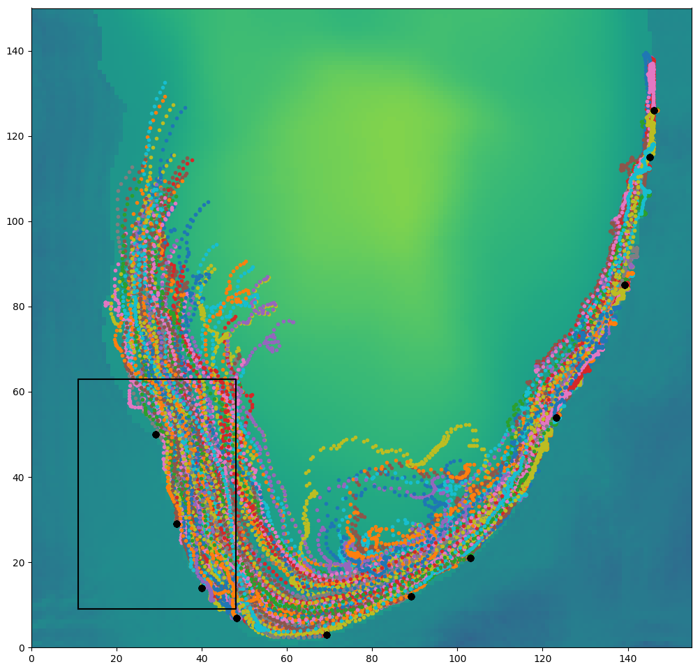A project to produce low cost current mapping equipment with multiple software components (IoT networking, visualization, in-field base-station GUI).
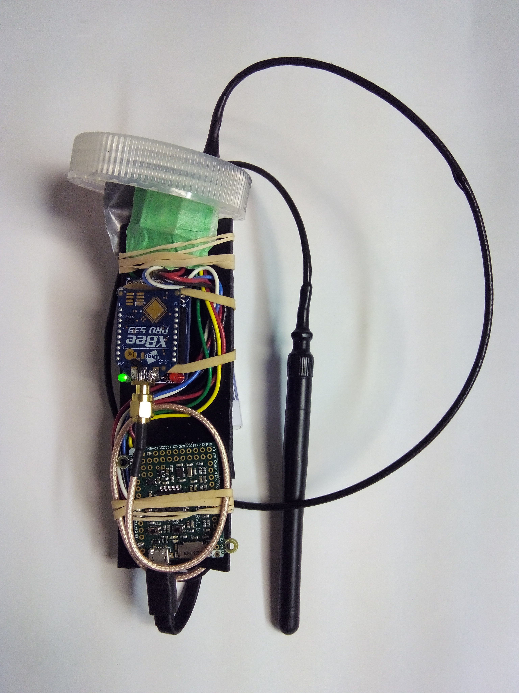Modeling nearshore phosphorus movement with 4D visualization.
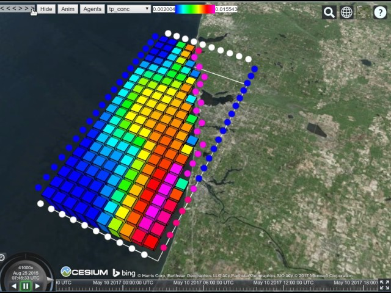A small JavaScript canvas / image demo.
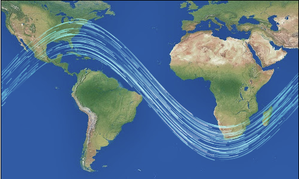Visualize the different forms a model term can take.
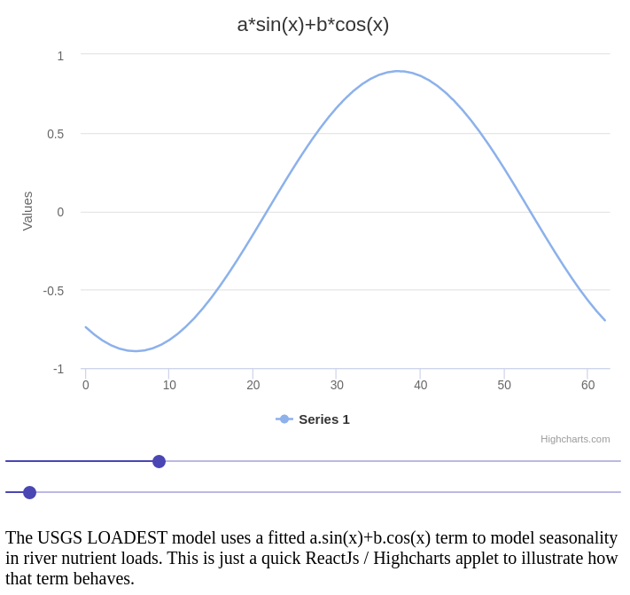Calculate rainfall volume over different areas in different units.
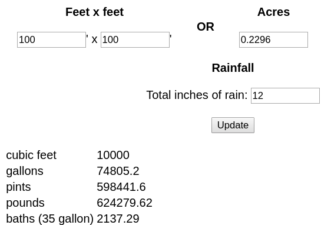Turns that jumbled Excel column of variously formatted and duplicated emails into a unique list of proper emails in blocks acceptable to you ISP.
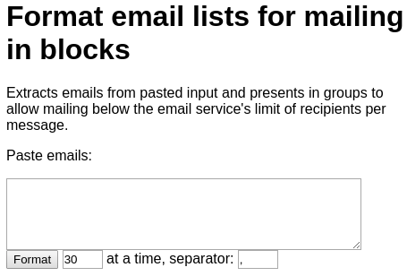require() lists for Dojo etc. [link]
An old utility useful developing ESRI ArcGIS web apps.
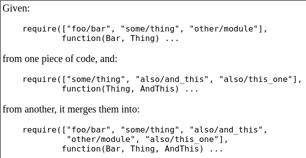